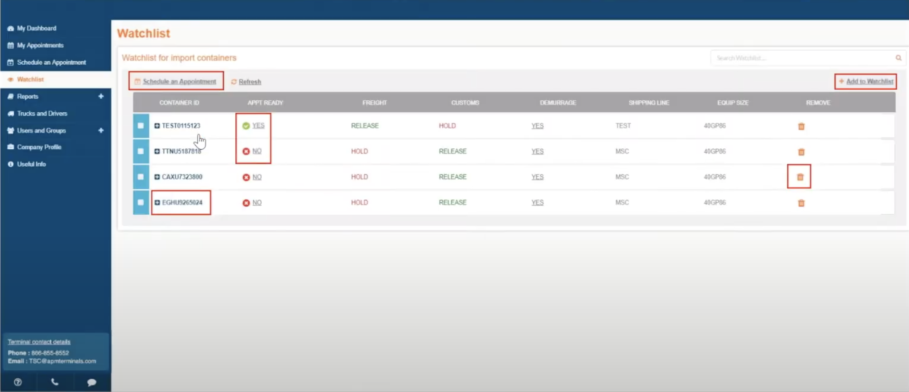

A thorough competitive analysis was conducted to identify best
practices and gaps in existing solutions. Below are the key findings:
-
Navis:
-
Upcoming Appointments: Provides a clear view of
upcoming tasks and appointments, allowing users to plan their
schedules effectively.
-
Error Handling: Highlights errors such as
incorrect PINs or booking numbers, ensuring users can quickly
address issues.
-
Gate Busyness: Displays real-time gate
activity, helping users avoid delays by planning around peak
times.
-
Notifications: Offers a centralized
notification system to keep users informed about important
updates and changes.
-
Yangtai:
-
Scheduling: Allows users to view and manage
schedules efficiently, with detailed time slots and task
assignments.
-
Task Tracking: Provides a clear breakdown of
tasks and their statuses, ensuring transparency in operations.
-
NYTD Shanghai Trader:
-
Integration: Seamlessly integrates with various
shipping lines and traders, providing a unified platform for
managing cargo operations.
-
Real-Time Updates: Offers real-time updates on
cargo status, ensuring stakeholders are always informed.
These insights were instrumental in shaping the design of the PCIS
Dashboard, ensuring it addresses the gaps identified in existing
solutions while incorporating best practices to enhance user
experience and operational efficiency.
